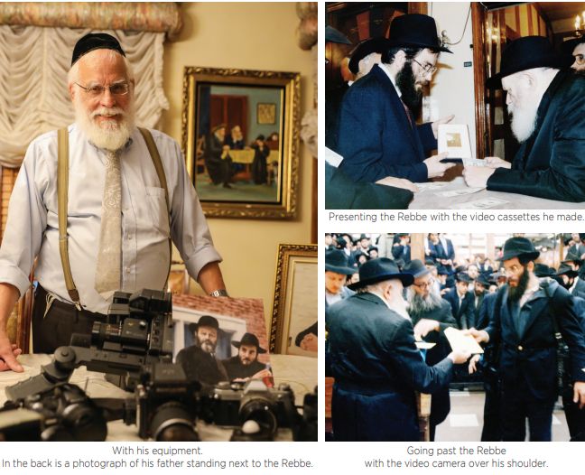

The First Video to Capture Tishrei with the Rebbe
Thirty years ago, for the first time, a video was produced that showed the events of Tishrei in Lubavitch, of a quality that had not been seen before then. * Rabbi Sholom Ber Goldstein, who filmed and produced the video during Tishrei 5748, told us about the breakthrough in technology that enabled such a high quality production, about the kiruvim he got from the Rebbe, and about the tremendous impact the video made on Chabad Chassidim around the world.

On the bottom of the screen appears a small sign which says the screen was donated by the Goldstein family l’ilui nishmas their parents, Rabbi Yosef and Mrs. Channa Priva a”h. Only few know that not only was the screen donated by them but also, all the old, rare, quality videos that are shown were filmed by R’ Sholom Ber Goldstein and are presented there as a merit for his parents.
I wanted to talk to the person behind this fabulous production. R’ Sholom Ber invited me to visit him in his basement where he showed me the old photography and video equipment that he used in his youth, along with the new equipment (as it was considered then, relative to those days) that he used to film “Tishrei With the Rebbe.”
CHILDHOOD IN THE SHADOW OF THE REBBE
Even as a child, R’ Sholom Ber felt close to the family of the Rebbe. His parents lived in Crown Heights in a building on the corner of New York and President during the years that the Rebbe lived in that building. “The Rebbe lived on the fourth floor and we lived on the second floor,” he told me, nostalgically. “As children, we were thrilled every time we had the privilege of opening the door of the building for the Rebbe when he entered or exited.”
Even in later years, when the Rebbe moved to a house, the Goldstein family continued to be of help with little things. “When it snowed, I would go with my brother R’ Aharon to clear the walk for the Rebbe. In those days, the Rebbe walked to his mother every day. Rebbetzin Chana lived on the corner of Kingston and President. Before the Rebbe would arrive, we would make sure the path was clear of snow from 770 until Rebbetzin Chana’s home.”
Although they were young children, they constantly thought of how to please the Rebbe. R’ Sholom Ber remembers how his brother Aharon saved the allowance he got from their parents and when he had amassed a sizable amount they paid the school bus driver, who took them every day from the yeshiva on Bedford to Crown Heights, so he would drive past the corner of Eastern Parkway and Brooklyn just as the Rebbe passed there.
“When the Rebbe passed by us, we would open the windows of the bus and burst into the Chabad niggun that the Rebbe would show particular encouragement for that year. How delighted we were when the Rebbe stopped walking, looked at us with a big smile, and encouraged our singing with his holy hand.”
In those days, few Lubavitcher families lived in Crown Heights and the children who lived in the neighborhood and davened in 770 felt like “members of the household.”
“On Erev Shabbos, when the Rebbe davened Mincha in the small zal, few people were there. As kids, we would go to daven and noticed that when the Rebbe wanted to walk backward for ‘oseh shalom,’ the table was in his way. Every Friday we would stand there on time and before the Rebbe finished Shmoneh Esrei, we would move the table back. Then, before the Rebbe sat down at the table, we put the table back.”
On Sukkos, the Rebbe farbrenged in the yard between 770 and the nearby building and that yard was called the shalash. R’ Sholom Ber and his brothers loved to watch the farbrengen from up on top. They would sneak into R’ Dovid Raskin’s room and after they would climb out of the window of his room, they would make their way over to the portion of the roof above the shalash from where they could view the farbrengen through cracks in the s’chach. Till today, he can picture the Rebbe and the Chassidim dancing in the sukka at four in the morning.
“That was Sukkos 5714 and till today, I remember the tune the Rebbe sang, ‘Mi’pi Keil Yevorach Yisroel.’”
THE YECHIDUS AND UTILIZING TALENTS FOR HOLINESS
In his childhood, R’ Sholom Ber was quite mischievous, to the extent that when he was two, and went with his parents for their annual yechidus, he pulled the telephone cord until the phone fell. The Rebbe understood the toddler’s need to play with something and gave him a green pen to play with.
“My mother cried in yechidus and asked the Rebbe, ‘What will be with Sholom Ber?’ but in the end, from all my ‘chayus,’ even if it was mixed with some ‘vildkeit’ (rowdiness), many good things came out!”
Some of those good things are rare videos that exist today only thanks to R’ Sholom Ber and his hobby. He went in the footsteps of his father, the unforgettable Chassid known as Uncle Yossi, who was not an official photographer and most of his pictures were taken on the sly. Especially in the early years, before the Rebbe allowed pictures to be taken at every event, he would show up with his small camera in his coat pocket and somehow find some hidden corner from where he snapped images of special moments with the Rebbe.
Uncle Yossi’s son, R’ Levi Goldstein remembers that at the end of Tishrei 5722, when the Rebbe left his room to escort the guests, his father stood and photographed the entire thing. The Rebbe noticed and motioned with both hands like someone playing the accordion, hinting to him that it was better for him to play a Chassidic tune on his accordion (as he did at children’s rallies).
R’ Sholom Ber, as a young man, began using his own money to buy advanced photography equipment. After he married his wife Chana, daughter of R’ Chaim Horowitz (known as Chaim Tashkenter), he continued to pursue his hobby and along with his work as a plumber he took every opportunity to photograph or film the Rebbe.
[R’ Sholom Ber said that one time, he was asked to make an urgent repair on a pipe in the Rebbe’s room. He was able to see the Rebbe learning in his room as he worked. “The Rebbe stood there, without his jacket, and learned Gemara with many sefarim scattered about. It was a rare glimpse.”]
In 5734/1974, he was able to buy equipment to record in color and with sound. It was an awkward machine with each tape containing three minutes of film. Every three minutes you had to change the cassette. On the one hand, the results were in color and terrific, including the sound. On the other hand, you were unable to record an entire farbrengen.
And it was extremely expensive. “For 11 Nissan, I wanted to film a lot of the farbrengen. I bought 20 cassettes, three minutes each and was able to record an hour of the farbrengen. It wasn’t an uninterrupted hour because it took time to remove the cassette and put in a new one. That recording cost me $400. At the time, it was an enormous amount of money, equal to $2500 today. I remember that after the farbrengen I tortured myself with the thought – was it worth putting in so much money for one fragmented hour of video. Today, when the only color video of that farbrengen is thanks to that recording, I regret not having bought more cassettes!”
Indeed, the quality videos that were made at that farbrengen are shown today in the video corner at the entrance to 770, and thanks to R’ Sholom Ber, we get to see and hear the Rebbe say the maamar of 11 Nissan 5737.
At that farbrengen, an artist went over to the Rebbe and presented an original gift, a painting of the Rebbe that he made, in a beautiful frame. The Rebbe accepted the gift with a big smile and the artist lifted the picture to show the Chassidim. This special scene was documented in those videos.
“A few years ago, I showed this video to R’ Yitzchok Groner, shliach in Australia, and it took him back to that farbrengen. He was so emotional that he cried.”
R’ Sholom Ber also made stills, including three-dimensional photos that were projected on a special slide machine. On my visit to R’ Sholom Ber, he showed me a gadget in which you put a pair of slides and by pressing a button the slides are projected in front of the viewer creating an astonishing three-dimensional illusion. It seems so real that you feel as though you can stretch out your hand and touch one of the people in the picture.
THE VIDEO THAT BROUGHT THE REBBE TO THE ENTIRE WORLD
R’ Sholom Ber didn’t keep the videos to himself. He would show up with a projector to N’shei Chabad events and the like and show them. “It was very expensive to copy these videos, so I only had the original which I would show at events. Despite all my efforts, I couldn’t spread the great light further.”
In the 80s, video cameras began to be marketed that enabled two hours of recording, which was a novelty and very expensive. At the end of 5747 (late 1987), the cost went down a bit and such a camera cost $10,000, still an enormous sum, the equivalent of about $30,000 today.
At this point, R’ Sholom Ber decided he had to jump in and buy the camera. He saw how his few videos thrilled the Chassidim and gave them a taste of goings-on at Beis Chayeinu and imagined the tremendous impact a quality video would make. It would bring the atmosphere of 770 anywhere in the world. The big advantage in video recordings, aside from the length, was the fact that it could easily be duplicated at low cost. This would make it possible to disseminate the video around the world.
“Before I went to Manhattan to buy the camera, I had to verify an important point. Until then, as I emphasized, I filmed clandestinely and I did not disseminate widely the final product. Now that I planned to film all of the (weekday) events in 770 from the best angles and then share the results, I did not think I could do this without explicit permission from the Rebbe’s secretariat. I went to R’ Leibel Groner and told him my plan and asked whether it was okay. After R’ Leibel gave the secretaries’ permission, I went to buy the camera.”
The first filming began with Slichos at the end of 5747 and continued throughout Tishrei 5748, which was a very special Tishrei, as is known and remembered by those who were there with the Rebbe. With unusual artistry, R’ Sholom Ber was able to film hundreds of little moments that together comprise a mosaic of “Tishrei With the Rebbe.”
The video brought the viewers into the atmosphere of Beis Chayeinu and for the first time, brought quality close-ups of the Rebbe so that the viewer felt as though the Rebbe is here, next to him. While watching the video, I was sure that he had deviated from his usual practice and went up close to where the Rebbe was sitting in order to do a better job, but R’ Sholom Ber said he invested in an expensive lens which enabled him to get fabulous close-ups without approaching the Rebbe.
“Although I got permission, I did not want to disturb the Rebbe in any manner or form, and so I did all I could to remain at a distance while simultaneously getting quality results.”
The only shots where he had to be close to the Rebbe were at the distribution of the dalet minim in Gan Eden HaTachton. He stood as far away as possible, on the stairs leading to the second floor, and filmed from there. At that time, he had a special kiruv from the Rebbe. After all the senior Chassidim left, the Rebbe handed him hadasim. On a similar occasion, after giving out shmura matza on Erev Pesach, the Rebbe handed him a matza (even though, in those years, the Rebbe stopped giving matzos to all of Anash).
“Of all the moments I filmed, those moments were, of course, the most moving.”
In the filming of the distribution of dalet minim, you also see the legendary photographer Levi Yitzchok Freiden. When I asked R’ Sholom Ber about their relationship, he smiled and said, “We were good friends. Not only did we not, G-d forbid, interfere with one another, we fully collaborated. He helped me when I needed it and I helped him when necessary. As a courtesy between photographers, we even photographed one another as we photographed the Rebbe. I have pictures that Freiden took of me in which I have my video camera on my shoulder as I film the Rebbe.”
SMALL MOMENTS ADD UP TO ONE BIG VIDEO
The video begins with the filming of an El Al plane landing on the runway at Kennedy airport, and continues with groups of Chassidim exiting the terminal and being welcomed warmly by relatives. You see Rabbi Yosef Ralbag and his wife Sima walking excitedly from passport control and meeting a brother/brother-in-law, R’ Moshe Slonim. Young bachurim follow them who look excited to finally arrive at Beis Chayeinu.
Upon arriving at 770 in yellow cabs, they are welcomed by R’ Moshe Yaroslavsky, the devoted director of Hachnasas Orchim, who doesn’t hesitate to help the guests by dragging a suitcase as he directs them to where they will be staying. In the background you also see emotional meetings of Chassidim who just landed, with their old friends.
The video leads the viewer to the moving scenes of the recitation of Slichos. The lively dancing before the Slichos begin, instantly changes into the serious atmosphere of Slichos and the veteran baal t’filla, R’ Yosef Wineberg, can be heard, with his distinctive voice.
Right after Hataras Nedarim on Erev Rosh HaShana, he segues straight to the line for giving the panim to the Rebbe, as he leads the viewer into the long line winding down the length of Eastern Parkway.
And so the video advances from one scene to the next. He even managed to film the final moments before the onset of Yom Kippur, thanks to his friend R’ Sholom Ber Harlig, who arranged for him to store the video camera in the small office of his father, R’ Meir, right next to the small zal. This made it possible to also capture the first moments after the close of the holy day, and to film the Rebbe during Havdala on Motzaei Yom Kippur.
I CAME TO THE REBBE THANKS TO THAT VIDEO
Towards the end of the month of Tishrei, R’ Sholom Ber edited the videos that he managed to capture and made many copies. “On Motzaei Simchas Torah, after I had filmed part of the distribution of kos shel bracha, I went out to the yard, where I set up a screen and a projector, and I showed the amazing results, which included dozens of special moments of Tishrei with the Rebbe. The Chassidim who had come for Tishrei from all over the world were very excited by the dazzling portrayal and bought tapes on the spot. That is how within a few days the tapes reached all parts of the world, from Eretz Yisroel and France to South Africa and Australia.”
R’ Shimmy Weinbaum, now one of the leaders of Worldwide Tzivos Hashem, told me that the first push for him to come for Tishrei with the Rebbe was thanks to the video by R’ Goldstein. “I grew up in England, with the typical English coldness, and I was not aware of the intensity of the holiness that could be experienced at a ‘Tishrei with the Rebbe.’ When I watched the video, I felt that I absolutely had to be there the next year, in order to have this unique spiritual experience. And so, the following year I accomplished my wish, and merited to be with the Rebbe for Tishrei 5749.”
R’ Sholom Ber heard this from R’ Shimmy Weinbaum, as well as from many hundreds of Chassidim who came for Tishrei 5749, and thanked him for the videotape which brought to life for them what it means “Tishrei with the Rebbe.”
In conclusion, he says, “I have no idea with what I merited that this great light should be transmitted through me. I only offer thanks to Hashem that I in fact merited to bring the sights and sounds from Beis Chayeinu, and I pray that we immediately get to see again the Rebbe Melech HaMoshiach.”
I offer my blessings that he merit to immediately be able to film the revelation of the Rebbe, and he responds with great feeling, “Amen!”
Avrohom Rainitz. "The First Video to Capture Tishrei with the Rebbe." Beis Moshiach, no. 1138 (October 24, 2018).